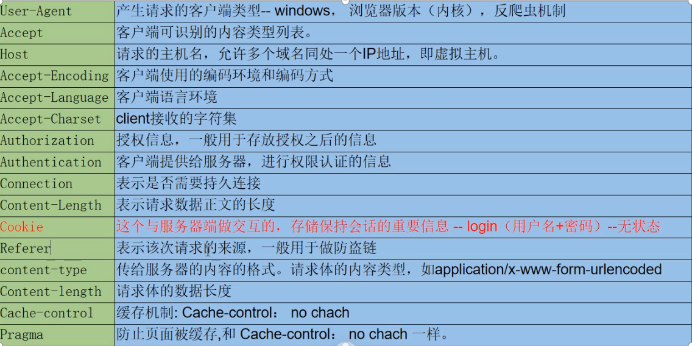
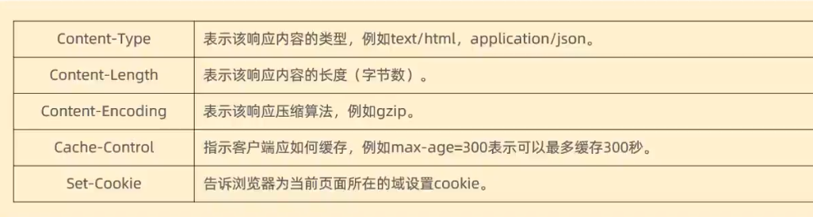

05 计算机网络
计算机网络
网络体系结构
对于网络体系结构的划分，主要有2种形式：
OSI七层网络模型
看赛博二哈的八股（第115条）
OSI（Open Systems Interconnection）模型由ISO提出，是一个理论分层框架，用于标准化网络通信过程。虽然实际网络并未完全采用OSI，但它对理解网络协议分层至关重要
| 层数 | 名称 | 功能 | 协议/设备示例 | 关键词 |
|---|---|---|---|---|
| 7 | 应用层 | 提供用户接口，实现具体应用功能（如文件传输、邮件收发） | HTTP、FTP、SMTP、DNS | |
| 6 | 表示层 | 数据格式转换（加密、压缩、编码） | SSL/TLS、JPEG、ASCII | |
| 5 | 会话层 | 建立、管理、终止应用程序间的会话 | NetBIOS、RPC | |
| 4 | 传输层 | 提供端到端的数据传输（流量控制、错误恢复） | TCP、UDP | 端口号、TCP、 UDP |
| 3 | 网络层 | 实现主机间的逻辑寻址和路由选择，跨越不同网络 | IP、ICMP、路由器 | IP地址、路由 器、ping通 |
| 2 | 数据链路层 | 将比特流封装成数据帧（使用MAC地址在网卡间通信） | ARP、网卡、交换机、 PPTP、L2TP、ATMP、MAC外设 | MAC地址，网卡 |
| 1 | 物理层 | 通过物理介质传输bit流；确定机械和电气规范 | 网线、光纤、集线器、PHY芯片、RJ45接口 |
- 传输层及以下由内核实现，其上由用户实现
TCP/IP四层模型
TCP/IP模型是互联网的实际协议栈，由IETF定义，去除了OSI中冗余的会话层和表示层，合并了数据链路层和物理层。Linux系统正是按照这套网络模型来实现网络协议栈的
也有的地方把TCP/IP说成5层模型，实际上是把“网络接口层”拆成了“数据链路层+物理层”
| 层数 | 名称 | 对应OSI层 | 核心功能 | 协议/设备示例 | 数据单元 |
|---|---|---|---|---|---|
| 4 | 应用层 | 应用层+表示层+会话层 | 处理高级协议（如HTTP、FTP） | HTTP、DNS、SMTP、WebSocket | 报文 |
| 3 | 传输层 | 传输层 | 端到端通信（可靠TCP/高效UDP） | TCP、UDP | 段/数据报 |
| 2 | 网络层 | 网络层 | 实现主机间的逻辑寻址和路由选择，跨越不同网络 | IP、ICMP、路由器 | 包 |
| 1 | 网络接口层 | 数据链路层+物理层 | 通过物理介质传输数据 | ARP协议，Ethernet、Wi-Fi、网卡 | 帧 |
数据封装流程
当用户发送数据时，各层逐级添加头部信息。接收方又逆向逐层剥离头部，最终交付给应用层
1 | 应用层： HTTP报文 "GET /index.html HTTP/1.1" |

面试题
1.键入网址到网页显示，期间发生了什么
- https://xiaolincoding.com/network/1_base/what_happen_url.html
- （1）浏览器解析URL，确定 Web 服务器和文件名
- （2）浏览器根据获得的信息生成HTTP请求报文（行、头、体3部分）
- （3）浏览器利用DNS协议向DNS服务器获取WEB域名对应的真实IP地址（DNS服务器也是有多级的，本机一般也有，如果本机已缓存了访问域名的对应关系的话，就不需要通过互联网再请求了）
- （4）通过 DNS 获取到 IP 后，就可以把 HTTP 的传输工作交给操作系统中的协议栈，通过3次握手建立TCP连接后，不断添加TCP+IP+MAC头部，最后通过网卡发出数据
- （5）交换机接收数据包放入其缓冲区中，之后查询该包的接收方的MAC地址是否已经在 MAC 地址表中有记录了，有的话就把数据从对应端口发出去。如果MAC是广播地址（
FF:FF:FF:FF:FF:FF）则进行广播

- （6）路由器收到数据包后，先去掉MAC地址拿到IP，再根据内部维护的路由表进行数据转发

- （7）服务器接收到数据后，不断拆包，最后得到HTTP报文
2.路由器和交换机的区别是什么
- 路由器是基于 IP 设计的，工作在网络层，路由器的各个端口都具有 MAC地址和 IP 地址
- 交换机是基于以太网设计的，工作在网络接口层，交换机的端口不具有 MAC 地址
3.发送网络数据的时候，涉及几次内存拷贝操作？
- 第一次，调用发送数据的系统调用的时候，内核会申请一个内核态的
struct sk_buff对象，将用户待发送的数据拷贝到sk_buff内存，并将其加入到发送缓冲区 - 第二次，在使用 TCP 传输协议的情况下，从传输层进入网络层的时候，每一个
sk_buff都会被克隆一个新的副本出来。副本sk_buff会被送往网络层，等它发送完的时候就会释放掉，然后原始的sk_buff还保留在传输层，目的是为了实现 TCP 的可靠传输，等收到这个数据包的 ACK 时，才会释放原始的sk_buff - 第三次，当 IP 层发现
sk_buff大于 MTU 时才需要进行。会再申请额外的sk_buff，并将原来的sk_buff拷贝为多个小的sk_buff
4.IP数据分片和TCP数据分段的区别是什么
- IP数据分片：当一个来自传输层的数据包的大小超过了出口网络的MTU时，网络层（IP协议）就必须将这个数据包分割成多个分片（Fragments），每个分片的大小都小于或等于MTU，才能被链路层封装成帧进行传输
- TCP数据分段：在TCP协议进行数据传输时，如果数据长度超过了MSS（Maximum Segment Size，最大报文段长度），则TCP协议会将数据进行分段，分成多个TCP段来发送

| 特性 | MSS (Maximum Segment Size) | MTU (Maximum Transmission Unit) |
|---|---|---|
| 所属层级 | 传输层 | 数据链路层 |
| 定义对象 | 一个 TCP 段 中 数据 的最大长度 | 一个 数据帧 所能承载的 上层协议数据 的最大长度 |
| 包含内容 | 仅应用数据（Payload） | IP 头 + TCP 头 + TCP 数据（即整个 IP 包） |
| 目的 | 优化 TCP 性能，避免 IP 分片 | 由物理网络标准定义，是硬性限制 |
| 关系 | MSS = MTU - IP头 - TCP头 | MTU 是 MSS 的基础 |
5.MSS和MTU是如何设置的
- MTU：通过OS可以直接设置
- MSS：在3次握手的时候确定
- 第一次握手：客户端在发送SYN包时，会将自己的MSS值作为一个TCP选项字段，填入TCP头部
- 第二次握手：服务器收到客户端的SYN包后，会读取客户端通告的MSS值。同时，它也会基于自己出口网络的MTU计算出自己的MSS值。并在SYN-ACK包中，将自己的MSS值也作为一个TCP选项字段回复给客户端
- 第三次握手：连接双方（客户端和服务器）会比较对方通告的MSS值和自己的MSS值，并选择较小的那个作为本次连接最终使用的MSS
6.调大MTU为什么能提高吞吐量
- 减少了协议头封装、解封装、中断触发和上下文切换的次数
网络接口层
ARP协议：将网络层的IP地址解析为网络接口层的物理地址（MAC地址）
核心作用：地址解析，将网络层的IP地址解析为网络接口层的物理地址（MAC地址）
在网络接口层（如以太网），设备之间直接通信使用的是MAC地址（如
00:1A:2B:3C:4D:5E），这是一个固化在网卡中的物理地址，就像设备的身份证号当一台主机需要向同一本地网络内的另一台主机发送数据时，它只知道对方的IP地址（如
192.168.1.2），但不知道对方的MAC地址。没有MAC地址，就无法组装数据链路层的帧ARP协议就是用来“问”：“谁的IP地址是
192.168.1.2？请把你的MAC地址告诉我。”
工作过程（ARP请求与应答）：
1.ARP请求（广播）：主机A在本局域网内广播一个ARP请求包，内容为：我是
IP_A/MAC_A，我想找IP_B，请告诉我你的MAC地址2.ARP应答（单播）：局域网内所有主机都收到请求，但只有主机B（IP地址为
IP_B）会响应。它向主机A单播一个ARP应答包：我是IP_B，我的MAC地址是MAC_B3.缓存：主机A将
IP_B和MAC_B的对应关系存入本地的ARP缓存表，后续通信直接查表即可，无需再次广播。缓存有过期时间
网络层
IP协议：负责跨网络的逻辑寻址和路由
核心作用：
1.逻辑寻址 ：IP协议为互联网上的每一台设备分配一个唯一的IP地址
2.路由 ：IP协议定义了如何根据目标IP地址，通过网络中的路由器将数据包从源主机发送到目标主机
3.数据包的分片与重组：当数据包的大小超过网络传输的最大单元（MTU）时，IP协议负责将其分片。在接收端，IP协议再将分片重组为原始数据包。
关键特性：
无连接 (Connectionless)：发送数据前不需要先建立连接。每个数据包（IP数据报）都是独立发送的。
不可靠 (Unreliable)：它不保证数据包一定能送达、不保证按顺序送达、也不保证数据不出错。可靠性由上层协议（如TCP）来保障。
传输层
TCP
基本概念
1.TCP数据报的组成是什么样的

TCP的头部大小不固定，因为它里面有个长度可变的“选项”字段，但它整体大小处于20~60字节的范围内。它主要有以下几个字段：
- 序列号：用于解决网络包乱序的问题，建立连接时生成一个随机数作为初值
- 确认号：下次期望收到的数据的序列号，发送端收到该数据后，可以认为这个号之前的数据都已经被接收到。用来解决丢包的问题
- 首部长度：表明TCP头部的大小（因为TCP头部大小不固定，所以用一个字段来记录）
- 控制标志位：
- URG：紧急指针有效
- ACK：确认号有效
- PSH：推送操作，要求尽快交付应用层
- RST：重置连接
- SYN（synchronize）：建立连接
- FIN（finish）：释放连接
- 窗口大小：用于流量控制，告诉对方自己的接收窗口大小
- 校验和：对TCP头和数据做校验（包含伪首部），保证数据完整性
- 紧急指针：与URG位配合，指出紧急数据在报文中的位置
2.TCP的序列号的作用是什么
- 解决网络包乱序的问题
3.TCP如何保证可靠传输的
- 序列号、确认号、重传机制、滑动窗口、拥塞控制、流量控制、校验和
4.使用TCP发送数据时，代码上是怎么写的，大概说一下用哪些API
服务端：
- 创建socket文件描述符（
domain，type参数很重要） - 使用
bind()绑定服务进程的ip地址和端口号 - 使用
listen()让fd进入监听模式，等待客户端的连接 - 使用
accept()从TCP的全连接队列中取出一个已经建立连接的socket，如果队列为空，会阻塞 - 调用
read/write/send/recv与客户端进行数据交互
- 创建socket文件描述符（
客户端：
- 创建socket文件描述符
- 使用
connect()与服务端进程进行连接 - 调用
read/write/send/recv与服务器进行数据交互
5.建立TCP连接后，客户端或者服务端一方宕机了怎么办
- TCP有个保活（keep alive）机制，可以设置客户端或服务端为探测方，并定义一个时间段，如果在这个时间段内没有任何的连接活动，则保活机制启动：每隔一个时间段，探测方会发送一个探测报文，如果连续几个探测报文都没有回应，则认为当前的连接以死亡，内核将错误信息报给上层
6.TCP保活机制和应用层心跳包机制的区别是什么
| 特性 | TCP保活机制 | 应用层心跳机制 |
|---|---|---|
| 实现位置 | 内核 TCP 协议栈 | 应用层代码 |
| 默认间隔 | 2 小时（可调） | 通常几秒~几十秒 |
| 控制灵活性 | 很低（只判断存活） | 很高（能加业务信息） |
| 开销 | 几乎没有，内核维护 | 占少量带宽和 CPU |
| 是否跨协议 | 只能 TCP | TCP / UDP / WebSocket / MQTT |
| 典型场景 | 数据库长连接清理 | IoT 设备心跳、IM、游戏、消息推送 |
7.TCP有哪些状态
| 状态 | 描述 |
|---|---|
CLOSED |
连接未使用或已关闭 |
LISTEN |
服务端监听客户端连接 |
SYN_SENT |
客户端已发送 SYN，等待 SYN+ACK |
SYN_RECV |
服务端收到 SYN，已发送 SYN+ACK，等待客户端 ACK |
ESTABLISHED |
连接已建立，可发送/接收数据 |
FIN_WAIT1 |
主动关闭方已发送 FIN，等待对方 ACK |
FIN_WAIT2 |
主动关闭方收到对方 ACK，等待对方 FIN |
CLOSE_WAIT |
被动关闭方收到 FIN，等待应用层关闭 socket |
LAST_ACK |
被动关闭方已发送 FIN，等待对方 ACK |
CLOSING |
双方同时关闭，等待 FIN+ACK |
TIME_WAIT |
主动关闭方等待 2×MSL（最大报文生存时间），确保对方收到 ACK |
8.什么是TCP粘包问题
- TCP粘包是指发送方发送的若干个数据包，在接收方接收时被“粘”在了一起，变成一个大的数据包。接收方无法区分原本的数据包边界，导致难以正确解析出原始的数据
- 原因：TCP粘包的根本原因在于TCP是一个面向字节流的协议，发送数据是只有字节，没有消息边界，并且TCP头部中只有”TCP头部大小”的字段，并没有TCP整个数据包长度的字段
- 解决办法：
- 定长消息：规定每个数据包都是固定的长度。例如，每个包 100 字节，不足的用空格补齐。实现简单，但不够灵活，可能浪费带宽
- 分隔符：在每个数据包的末尾加上一个特殊的分隔符（例如换行符
\n）。接收方通过这个分隔符来拆分数据包。例如，FTP 和 Redis 的通信协议就采用这种方式 - 长度字段：在数据包的头部加上一个固定长度的字段（通常是 4 字节），用来表示后面数据体的长度
三次握手
1.TCP三次握手建立连接时，发送的数据只有TCP头嘛？建立完连接后，发送数据时还需要TCP头嘛
- 3次握手建立连接时，前2次发送的数据确实只有 TCP 头部，没有应用层数据
- 建立连接后，后续发送的所有数据仍需要 TCP 头部，因为其中包含了序列号、确认号、窗口大小等信息
2.TCP三次握手的流程是什么（客户端发起）
第一次：客户端向服务端发送一个只有TCP头部、没有应用层数据的报文（SYN报文），该报文主要有以下2个字段的数据：
- 序列号：随机初始化一个变量
client_isn，填充到TCP头部的序列号字段 - SYN：将TCP头部的SYN位设置为1
初始化头部后，将报文发送给服务器，表示发起连接，此时客户端内核中的
tcp_sock进入SYN_SENT状态- 序列号：随机初始化一个变量
第二次：服务端收到客户端的连接请求报文后，给客户端回一个只有头部的报文（SYN+ACK报文），主要包含以下字段：
- 序列号：随机初始化一个变量
server_isn，填充到TCP头部的序列号字段 - 确认应答号：把TCP头部的确认应答号字段填入
client_isn + 1 - SYN&ACK：将TCP头部的SYN位和ACK位设置为1
最后把该报文发给客户端，该报文也不包含应用层数据，之后服务端处于
SYN_RCVD状态- 序列号：随机初始化一个变量
第三次：客户端收到服务端报文后，还要向服务端回应最后一个应答报文（ACK报文）包含TCP头部和应用层数据，TCP头部包含以下字段：
- 确认应答号：把TCP头部的确认应答号字段填入
server_isn + 1 - ACK：将TCP头部的ACK位设置为1
发送完毕后，客户端进入
ESTABLISHED状态，服务端接收到此报文后，也进入该状态- 确认应答号：把TCP头部的确认应答号字段填入
4.为什么要三次握手
- 阻止历史连接的建立
- 保证双方都能确认对方的收发能力
- 第一次（客户端 SYN）：确认客户端能发，服务端能收
- 第二次（服务端 SYN+ACK）：确认服务端能发，客户端能收
- 第三次（客户端 ACK）：确认客户端能收，服务端能发
5.为什么不是两次握手
- 无法避免旧的SYN报文的干扰：
- 历史连接的干扰：假设客户端很久以前发过一个 SYN 包，因网络延迟，服务端现在才收到。如果只需要 2 次握手，服务端就会立刻认为有一个新连接，白白分配资源。客户端其实早就超时放弃了，这样就出现资源浪费/错误连接
- 半连接：如果服务端发送SYN+ACK后就认为已经完毕，而客户端没收到这个包，则会出现半连接的问题
6.为什么不是四次握手
- 其实三次已经足够确认双方的收发能力，多一次没有额外收益，只是增加开销
7.三次握手时数据发送失败，如何设计一种解决方式
8.为什么初始化序列号要随机产生
- 如果每次都从0开始，那么可能会出现历史报文被新连接接收的情况
9.TCP服务端的半连接队列和全连接队列是什么
在 TCP 三次握手过程中，服务端会维护两个队列：
半连接队列（SYN 队列）：存放已收到 SYN 但未完成三次握手的请求
全连接队列（Accept 队列）：存放已完成三次握手但还未被应用层
accept()的连接
四次挥手
1.四次挥手的流程是什么（下面以客户端发起为例，但是也可以是服务端发起，那么下面的例子就得反过来）
- 第一次（客户端关发送）：客户端准备断开连接，发送一个
FIN报文（TCP头部中的FIN位被置1），之后进入FIN_WAIT_1状态 - 第二次（服务端关接收）：服务端收到该报文后，就向客户端发送
ACK应答报文，接着服务端进入CLOSE_WAIT状态。客户端收到ACK报文后，进入FIN_WAIT_2状态 - 第三次（服务端关发送）：服务端处理完数据后，也向客户端发送
FIN报文，之后进入LAST_ACK状态 - 第四次（客户端关接收）：客户端收到
FIN报文后，回一个ACK应答报文，之后进入TIME_WAIT状态。服务端收到此应答报文后，进入CLOSE状态，断开连接。客户端再经过2MSL时间后，也进入CLOSE状态，断开连接
2.为什么要四次挥手
- 因为它是全双工的，双方的发送通道必须独立关闭。一个方向需要 FIN 和 ACK 两个报文确认，两个方向加起来就是四次
3.第四次挥手完毕是立即断开吗
4.TIME_WAIT的时间是多长，为什么要有这个等待的过程
- 等待
2MSL（Maximum Segment Lifetime，报文最大生存时间） - 原因：
- 防止历史连接中的数据，被后面相同四元组的连接错误的接收
- 保证 被动关闭连接 的一方，能被正确的关闭
5.一个服务器出现很多TIME_WAIT，可能原因是什么
滑动窗口
背景：TCP通信时，发送端每次需要等待接收端返回确认应答信息后，才会发送下一次的数据，这使得通信效率很低。于是TCP定义了一个窗口大小，在窗口满之前，发送端可以不需要收到ACK就继续发数据，并把发送了的数据保存在内核维护的缓冲区中，当收到ACK后再把数据从缓冲区删掉
1.窗口大小由谁决定
- 由接收方决定，通过TCP头部的窗口大小字段告诉发送方自己还能接收多少数据
流量控制
目的：防止发送方发送速度超过接收方处理能力，避免接收方缓冲区溢出
实现机制：通过滑动窗口来控制
1.TCP的流量控制有哪些方案
| 流量控制方案 | 原理 | 说明 |
|---|---|---|
| 基于接收窗口的滑动窗口 | 接收方告诉发送方自己的剩余缓冲区大小 | 发送方可发送的数据 ≤ 接收方 rwnd；rwnd 会随 ACK 动态滑动 |
| 零窗口机制 | 当接收方缓冲区满时，将 rwnd 置 0 | 发送方暂停发送，直到接收方有空间再更新窗口 |
| 窗口更新 | 接收方缓冲区释放后发送 ACK，更新 rwnd | 通知发送方可以继续发送数据 |
| 应用层速率控制（可选） | 应用层根据处理能力限制发送速率 | 适合实时或大数据场景，防止频繁触发零窗口 |
2.流量控制时，接收方的缓冲区快满了怎么办
- 通过更新ACK报文中的窗口大小字段，告诉发送方剩余空间大小
重传机制
背景：TCP在建立连接后，主机A每次给主机B发送数据后，主机B需要给主机A返回一个确认应答信息，表示收到了该消息，但是有的时候数据可能在传输过程中丢失，所以TCP引入了重传机制
1.TCP中有哪些重传机制
- 超时重传：发送数据时设置个定时器，如果超过设置的时间（RTO）都没有收到对方的ACK报文，则重传该数据
- 快速重传：如果发送方连续收到3 个相同的冗余 ACK，说明某个分段丢失了（因为对方一直在确认同一个序号），于是立即重传该丢失的分段，而不用等 RTO 超时
- SACK（选择性确认）：在TCP头部的选项字段中加入SACK信息，将已经接收到的数据告诉发送方，这样发送方就可以知道哪些数据丢失了，从而重传
- D-SACK：使用SACK告诉发送方，哪些数据被重复接收了
拥塞控制
目的：防止发送方过快发送数据导致网络拥塞
原理：在发送方维护一个拥塞窗口cwnd = min(cwnd, rwnd)。根据网络状况（丢包、延迟等）动态调整拥塞窗口cwmd，从而控制发送速率
与流量控制的区别：
流量控制：控制发送方不要超过 接收方处理能力（rwnd）
拥塞控制：控制发送方不要超过 网络承载能力（cwnd）
TCP的拥塞控制包含以下这些算法：
- 慢启动：当发送方每收到一个ACK，cwnd+1。但不会一直变大，当cwnd>ssthresh时，采用拥塞避免算法
- 拥塞避免：当发送方每收到一个ACK，cwnd+1/cwnd
- 拥塞发生：当网络出现拥塞时，会出现数据的重传，根据不同的重传机制，拥塞发生的处理策略也不同
- 超时重传：ssthresh /=2，cwnd重置为1
- 快速重传：cwnd/=2，ssthresh = cwnd，并进入快速恢复算法
- 快速恢复：每收到一个新的重复 ACK，cwnd+1；当收到丢失分段的 ACK 后，cwnd 回到 ssthresh
内核实现
1.struct socket：用户态 sockfd 的内核映射，保存 socket 类型、状态、操作函数表等信息。用户态通过 socket() / bind() / connect() 系统调用操作这个对象
1 | struct socket { |
2.struct sock：内核协议栈核心对象，管理 TCP/UDP 等传输层状态、缓冲区、队列、网络层信息。TCP、UDP、SCTP、RAW 等协议栈都是通过继承该类的
1 | struct sock { |
3.struct tcp_sock：TCP协议栈的扩展结构，封装了TCP特有的状态和控制信息
1 | struct tcp_sock { |
UDP
基本概念
1.UDP的头部怎么样的

- 目标和源端口：主要是告诉 UDP 协议应该把报文发给哪个进程
- 包长度：该字段保存了 UDP 首部的长度跟数据的长度之和
- 校验和：校验和是为了提供可靠的 UDP 首部和数据而设计，防止收到在网络传输中受损的UDP包
2.TCP和UDP的区别是什么
(1)是否面向连接
- TCP：面向连接（三次握手、四次挥手）
- UDP：无连接，发数据前不需要建立连接
(2)可靠性
- TCP：可靠传输（有序、无丢失、无重复）
- UDP：不可靠传输（可能丢包、乱序、重复）
(3)传输方式
- TCP：字节流（没有边界，应用层自己分段）
- UDP：数据报（有边界，应用层一发一收）
1 | // client 伪代码 |
(4)首部开销
- TCP：20 ~ 60 字节，头部较大
- UDP：固定 8 字节，开销小
(5)传输效率
- TCP：需要握手确认、流量控制、拥塞控制，效率相对低
- UDP：直接发，实时性高，效率更高
(6)流量控制 & 拥塞控制
- TCP：有滑动窗口、流量控制、拥塞控制机制
- UDP：没有，发多少都丢给 IP 层
(7)典型应用场景
- TCP：可靠性要求高的应用 → HTTP/HTTPS、FTP、SMTP、SSH
- UDP：实时性要求高、偶尔丢包可接受的应用 → DNS、VoIP、视频会议、在线游戏
3.为什么UDP不存在粘包问题
- UDP是面向数据报的协议，每次
sendto/recvfrom都是以数据报为单位的，协议维护了消息的边界，并且在UDP的头部有”数据大小”这一字段
4.使用UDP发送数据时，代码上是怎么写的，大概说一下用哪些API
- 服务端：
- 创建socket文件描述符（
domain，type参数很重要） - 使用
bind()绑定服务进程的ip地址和端口号 - 调用
sendto/recvfrom从指定的IP和端口收发数据
- 创建socket文件描述符（
- 客户端：
- 创建socket文件描述符
- 使用
connect()设置服务端进程的IP地址和端口号 - 调用
read/write/send/recv与服务器进行数据交互
5.如何设计一个可靠的UDP传输
应用层
HTTP
HTTP协议是一种请求—响应类型的==应用层协议==，每次使用时，都是客户端向服务端发送一个资源请求，然后服务端给客户端一个响应。正是因为它这种”请求—响应“式的工作方式，该协议被广泛的应用于网页访问：当用要访问某个页面时，实际上就是浏览器向Web服务器请求该页面的.html文件，页面会响应该请求，把页面返回给浏览器
- 我们常说的webserver指的是HTTP(s)协议的服务端，负责处理HTTP请求，返回网页或数据
- HTTP(s)服务端通常使用80/8080/443端口，但不强制。不过用浏览器访问网站的url默认使用的是80/443端口，如果HTTP服务端部署在其他端口，客户端在访问时需要在url手动加上
特点：
- 传输层基于TCP协议来传输数据（HTML文件、图片文件、查询结果等）
- 一次请求对应一次响应
- 该协议是无状态协议，对事物处理没有记忆，每次请求—响应都是独立的
报文格式
HTTP协议的请求报文由以下几部分构成：
(1)请求行：请求报文的第一行
- 请求方式：如
GET、POST… - 资源路径(URL：统一资源定位符)
- HTTP协议的版本
- 请求方式：如
(2)请求头：提供有关请求上下文的信息，以便服务器可以定制响应。请求报文的第二行~换行前
- 格式全是
key:value
- 格式全是
(3)空行
(4)请求体：用于客户端向服务端发送需要处理的数据，比如表单数据等
GET方法通常将请求体放到URL中，并以key:value的形式给出。如POST方法通常使用json格式将请求体放到数据报文的最下方
1
2
3
4
5
6POST /devices/949021331/datapoints?type=3 HTTP/1.1
api-key:oMgRtpcLmtaawvMYwY4=ZAvBVVU=
Host:api.heclouds.com
Content-Length:%d
{"Heart_Rate":1,"SpO2":1,"P_NUM":1}
常见的请求方式
| 序号 | 方法 | 描述 |
|---|---|---|
| 1 | GET | 请求指定的页面信息，并返回实体主体 |
| 2 | HEAD | 类似于 GET 请求，只不过返回的响应中没有具体的内容，用于获取报头 |
| 3 | POST | 向指定资源提交数据进行处理请求（例如提交表单或者上传文件），数据被包含在请求体，POST 请求可能会导致新的资源的建立和/或已有资源的修改。 |
| 4 | PUT | 从客户端向服务器传送的数据取代指定的文档的内容 |
| 5 | DELETE | 请求服务器删除指定的页面 |
| 6 | CONNECT | HTTP/1.1 协议中预留给能够将连接改为管道方式的代理服务器 |
| 7 | OPTIONS | 允许客户端查看服务器的性能 |
| 8 | TRACE | 回显服务器收到的请求，主要用于测试或诊断 |
| 9 | PATCH | 是对 PUT 方法的补充，用来对已知资源进行局部更新 |
常见的请求头
HTTP头部字段可以自己根据需要定义，因此可能在 Web 服务器和浏览器上发现非标准的头字段
下面介绍一些常见的请求头：

响应报文
HTTP协议的响应报文由以下几部分构成：
(1)响应行：响应报文的第一行
- HTTP协议的版本
- 响应的状态码
- 状态码的描述
(2)响应头：响应报文的第二行~换行前
- 格式全是
key:value
- 格式全是
(3)空行
(4)响应体：存放响应数据
响应状态码的分类
| 分类 | 分类描述 |
|---|---|
| 1** | 信息，服务器收到请求，需要请求者继续执行操作 |
| 2** | 成功，操作被成功接收并处理 |
| 3** | 重定向，需要进一步的操作以完成请求 |
| 4** | 客户端错误，请求包含语法错误或无法完成请求 |
| 5** | 服务器错误，服务器在处理请求的过程中发生了错误 |
常见的响应头

在构造响应头时，要非常注意Content-Type字段，它表明了响应内容的类型，如果指定错误，可能后续会无法正确打开得到的响应数据。
HTTP协议的解析
HTTP协议的解析这件事通常服务端和客户端都需要做
- 服务端：解析请求报文并返回应答报文
- 客户端：产生请求报文并解析应答报文
但是一般使用HTTP协议的客户端都是浏览器，而浏览器里面又内置了解析应答报文，并将返回的.html文件渲染成网页的功能，所以一般==只需要==在服务端(后端)代码中对HTTP报文进行解析。但如果客户端并不是浏览器，比如自己写了个依靠百度翻译API的小程序，那么客户端中还是需要对服务端给出的响应报文进行解析的。
协议解析是基于
Socket的，以Web服务器为例：具体流程就是服务端一直监听80端口，直到accept()客户端发送的建立TCP的请求，两者通过3次握手建立里TCP连接，接着用Socket接收客户端传来的请求报文，存在一个字符串/数组中，然后按照HTTP协议的格式解析这个请求报文，并构造好响应数据，再由Socket传回客户端。
Web服务器通常指的就是：封装好了解析HTTP协议的服务器程序，主要功能是提供“网上信息的浏览服务”。
有了这些Web服务器程序，开发者就不需要自己对HTTP协议进行解析，可以只用关注业务逻辑的处理，使Web开发更为简单。
HTTPS协议
1.https的加密过程是在哪一层
2.传输层用的是什么协议
- TLS
3.TLS协议的作用